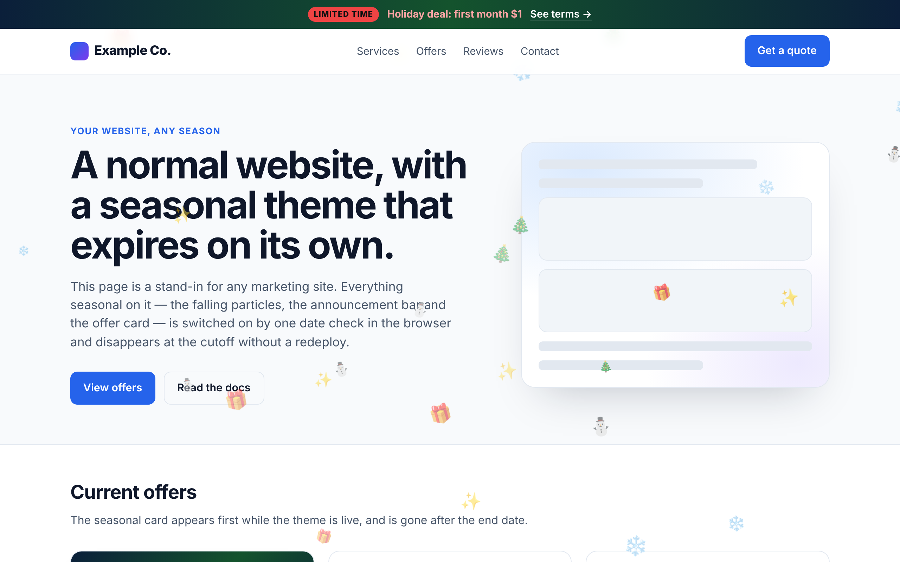
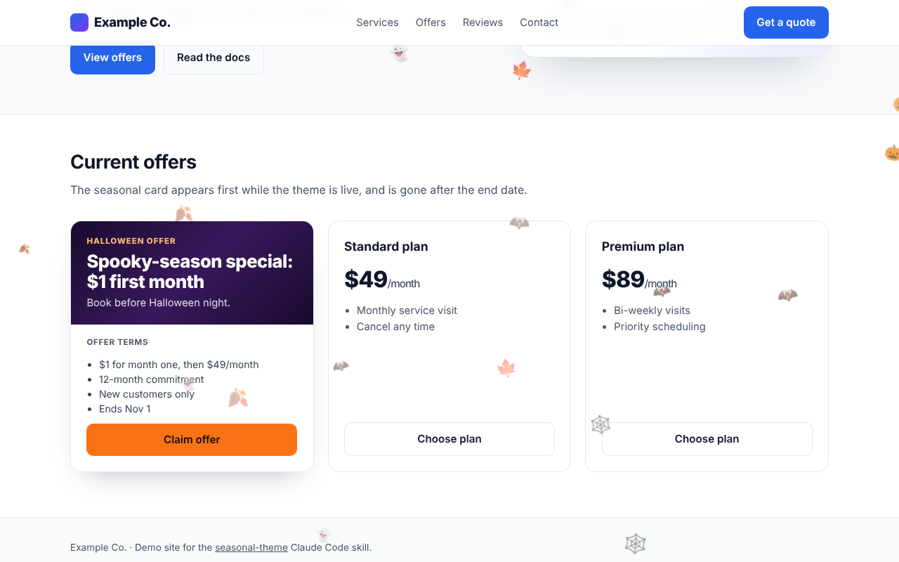
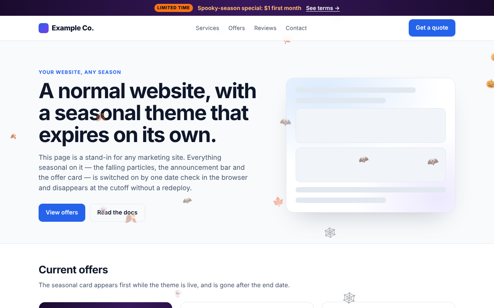
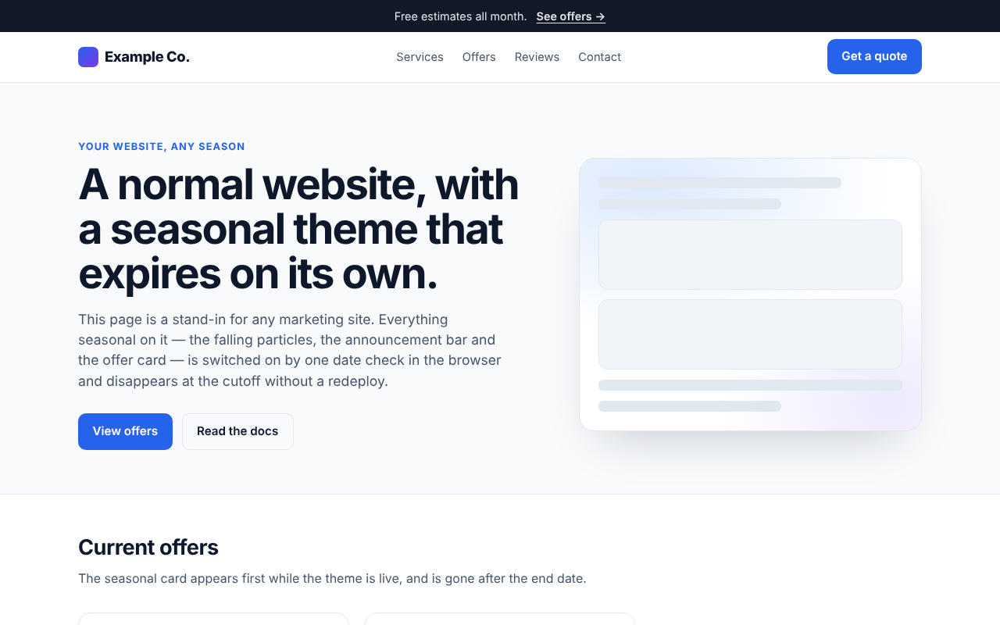
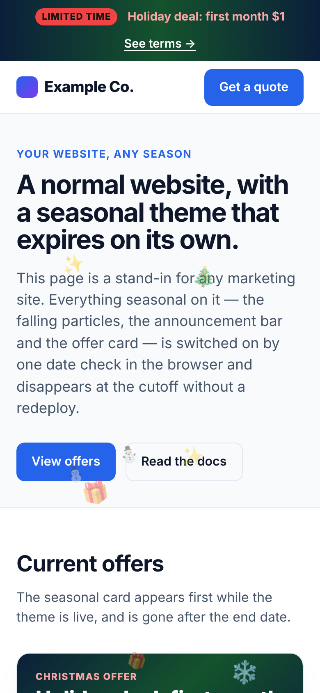
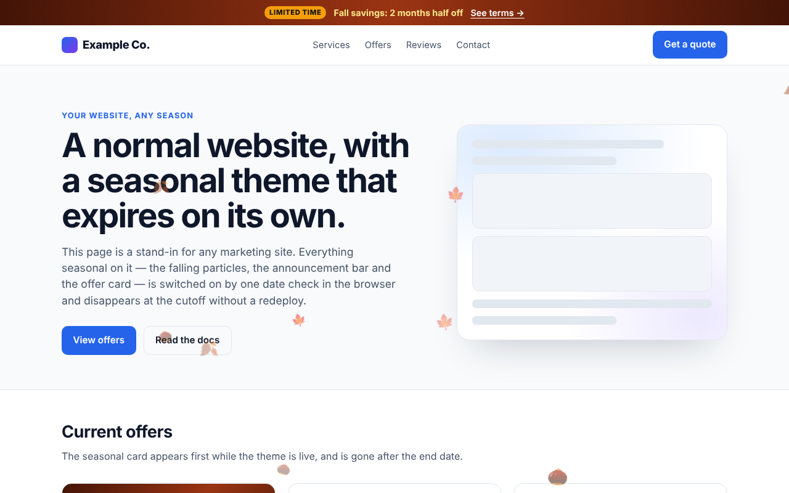
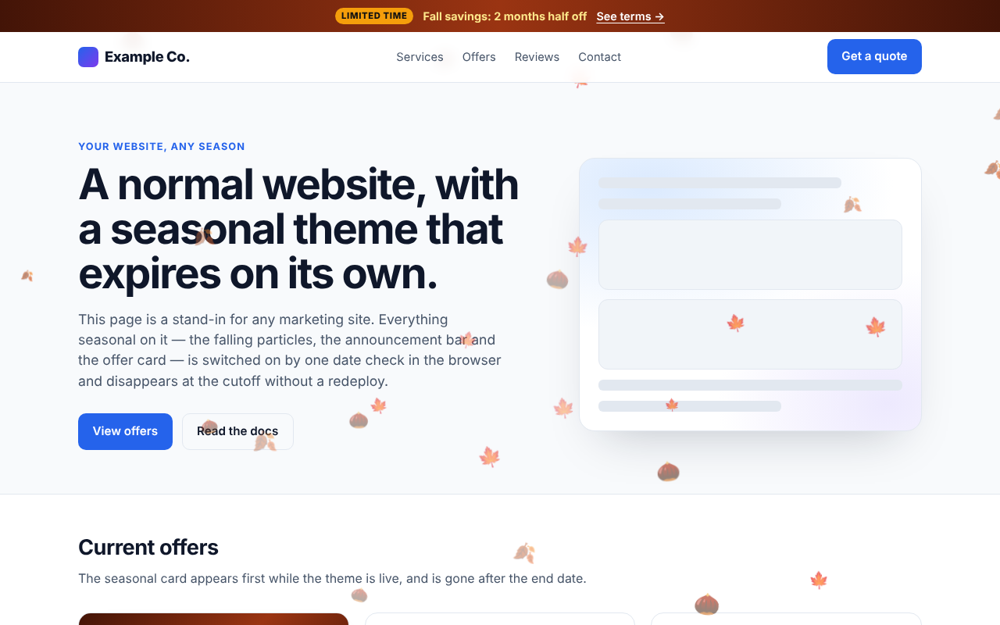

Holiday themes that switch themselves off.
One command adds falling snow, pumpkins or hearts, a seasonal promo bar and an offer card with its terms to any React/Next.js or static site. A hardcoded expiry date in the browser removes all of it for every visitor on the end date, even if you never redeploy.
npx degit Itzkiro/Raid-Contractor-Marketing-Wesbite-Themes/skills/seasonal-theme .claude/skills/seasonal-theme

Three layers, one date gate
Each layer works on its own. All three read the same cutoff timestamp, so they appear together and disappear together.
Weather effect
Falling emoji particles over every page, like the classic WordPress "falling elements" plugins. Pure CSS animation: no library, no network request.
Announcement bar re-skin
A seasonal gradient and promo headline on your existing bar. Your normal bar is the fallback branch, so it comes back automatically after the end date.
Offer card
A promo card on your offers or landing page, with price, commitment, exclusions and end date printed right beside the claim.


From zero to snowing in about a minute
You need Claude Code and a website repo. The skill is plain Markdown that Claude reads; it has nothing to install at runtime and no dependencies.
Add the skill to your project
From the root of your website repo:
npx degit Itzkiro/Raid-Contractor-Marketing-Wesbite-Themes/skills/seasonal-theme .claude/skills/seasonal-themeOpen Claude Code in that repo
Claude Code picks up skills in .claude/skills/ when a session starts.
claudeAsk for a season
Use the slash command, or ask in plain words ("make it snow until New Year's").
/seasonal-theme christmas --promo "Holiday deal: first month $1" --promo-href /offers --terms "$1 month one, then $49/mo; 12-month commitment; new customers only"Review, commit, deploy
Claude finds your layout and announcement bar, works out the UTC cutoff, installs the components, checks them in a headless browser with both a live and a faked future clock, and commits with the expiry date in the message. If your host deploys from main, pushing is the deploy.
Three ways to add it to a project
Every method ends with the same file at .claude/skills/seasonal-theme/SKILL.md in your website repo. Commit it so everyone on the team gets the command.
Downloads only the skill folder, with no git history. Run it from your project root.
npx degit Itzkiro/Raid-Contractor-Marketing-Wesbite-Themes/skills/seasonal-theme .claude/skills/seasonal-themeClone this repo once, then copy the folder into any project.
git clone https://github.com/Itzkiro/Raid-Contractor-Marketing-Wesbite-Themes.git ~/seasonal-theme-skillmkdir -p .claude/skills && cp -r ~/seasonal-theme-skill/skills/seasonal-theme .claude/skills/Pins the skill to a commit so git submodule update --remote pulls in later improvements.
git submodule add https://github.com/Itzkiro/Raid-Contractor-Marketing-Wesbite-Themes.git .claude/vendor/seasonal-theme-skillmkdir -p .claude/skills && ln -s ../vendor/seasonal-theme-skill/skills/seasonal-theme .claude/skills/seasonal-themeThe submodule holds the whole repo, so a symlink exposes just the skill at .claude/skills/seasonal-theme. On Windows without symlink support, use the Copy method instead.
Install once for your user account and the command is available in every repo you open with Claude Code.
npx degit Itzkiro/Raid-Contractor-Marketing-Wesbite-Themes/skills/seasonal-theme ~/.claude/skills/seasonal-themeCheck that it loaded
Start claude in the project and type /. seasonal-theme should be in the list. Or ask "what skills do you have?" If it isn't there, confirm the file is at .claude/skills/seasonal-theme/SKILL.md (not one folder deeper) and start a new session.
Every command and option
Three commands. You can also just describe what you want: "put up the Christmas theme", "make it snow" and "Valentine's hearts please" are all treated as the command.
| Command | What it does |
|---|---|
/seasonal-theme <season> [options] | Installs that season's theme from the catalog, using its default end date unless you pass --ends. |
/seasonal-theme off | Removes the seasonal code completely. Before expiry this ends the promo early. After expiry it is just cleanup, because the code already renders nothing. |
/seasonal-theme status | Reports which theme is installed, its end date, and whether it is live for visitors right now. |
Options
| Flag | Value | Effect |
|---|---|---|
--ends | YYYY-MM-DD | Overrides the season's default end date. The theme expires at 00:00 on that date in --tz. |
--tz | IANA zone, e.g. America/New_York | Time zone for the cutoff. Claude converts it to a UTC timestamp, accounting for DST. |
--promo | "TEXT" | Promo headline for the announcement bar and offer card. |
--promo-href | path, e.g. /offers | Where the bar's promo links to. |
--terms | "a; b; c" | Semicolon-separated offer terms, printed on the offer card beside the price. |
--density | low | normal | high | Particle count: about 10 / 20 / 32 on desktop, half that on phones. |
--no-weather | — | Skips the falling-particle layer. |
--no-bar | — | Leaves the announcement bar alone. |
--no-card | — | Skips the offer card. |
Recipes
Just weather, nothing else
/seasonal-theme snow --ends 2027-01-15 --tz America/ChicagoFull Halloween campaign
/seasonal-theme halloween --promo "Spooky-season special: $1 first month" --promo-href /offers --terms "$1 month one, then $49/mo; 12-month commitment; new customers only"Promo bar only, no particles
/seasonal-theme valentines --promo "Refer a friend, both save $25" --no-weather --no-cardSubtle effect on a busy site
/seasonal-theme autumn --density low --no-bar --no-cardSummer, with a custom end date
/seasonal-theme summer --ends 2027-09-02 --tz Europe/London --promo "Summer kickoff: $1 first month"Check, then remove
/seasonal-theme status/seasonal-theme offWhat a session looks like
> /seasonal-theme christmas --promo "Holiday deal: first month $1" --promo-href /offers --terms "$1 month one; 12-month commitment" ● Scouting the repo Next.js App Router · bar in components/announcement-bar.tsx highest z-index: modal z-50 → weather overlay at z-30 bare routes: /lp/* (reusing isBareRoute()) ● Computing the cutoff Dec 26 00:00 America/New_York (EST, UTC-5) → Date.UTC(2026, 11, 26, 5, 0, 0) ● Installing + components/seasonal-theme.tsx ~ components/announcement-bar.tsx (seasonal branch) ~ app/offers/page.tsx (offer card + terms) ● Verifying in a headless browser ✓ live clock: 20 particles moving, bar + card shown ✓ 390px viewport: 10 particles ✓ faked clock after cutoff: 0 seasonal elements ✓ /lp/* routes clean ● Committed "Add Christmas theme (expires 2026-12-26 ET)"
Illustrative. File names and paths depend on your repo.
> /seasonal-theme status theme christmas layers weather · bar · card expires 2026-12-26 00:00 America/New_York (2026-12-26T05:00:00Z) live now yes, 78 days left > /seasonal-theme off ● Removing - components/seasonal-theme.tsx ~ components/announcement-bar.tsx (seasonal branch reverted) ~ app/offers/page.tsx (card include removed) ● Build ✓ normal bar content verified ● Committed "Remove Christmas theme"
Illustrative. You can also say "is the holiday theme still on?" or "take the snow down".
Ten seasons ready to go
Every default can be overridden with flags. Click a screenshot to open that season in the live demo. snow and rain are weather-only, so they default to --no-bar --no-card.
Defaults
| Season key | Particles | Bar gradient (from → via → to) | Accent | Default end (local) |
|---|
The cutoff is checked in the visitor's browser
On a static or SSG site, a server-side date check runs once at build time and never runs again, so the theme would never expire. The skill hardcodes the cutoff as a UTC timestamp and compares it with Date.now() in the browser after mount. When the date passes, every visitor sees your normal site on their next page load, with no redeploy.
// Nov 1, 00:00 America/New_York (EDT, UTC-4) == 04:00 UTC
const ENDS_UTC = Date.UTC(2026, 10, 1, 4, 0, 0);Date.now() < ENDS_UTC: weather, bar and card render.
The "after" screenshot was taken the way the skill verifies an install: by overriding the clock past the cutoff in a headless browser. Try it with the checkbox in the demo.
Half the particles on phones
Below 640px wide, the particle count is halved. The first screen on a phone is already crowded, and a seasonal effect shouldn't get in the way of a visitor who came to convert.


--density low: about 10 on desktop.
--density high: about 32 on desktop.Ten rules that come from real incidents
The skill tells Claude to follow all of them on every install. They're why a seasonal theme won't cost you conversions, SEO or a broken page.
pointer-events: none, fixed and clipped, with a z-index below your modals, cookie banners and sticky CTAs.prefers-reduced-motion: reduce.localStorage access throws in blocked cross-origin iframes and can take the whole page down.React, Next.js, or a plain HTML file
React / Next.js (App Router)
A "use client" component, components/seasonal-theme.tsx, exports useSeason() and <SeasonalWeather />. Claude mounts it once in your layout or announcement bar, then uses useSeason() to branch the bar and gate the offer card. Works on Vercel, Netlify or any static export.
Static sites (HTML, Astro, 11ty, …)
One deferred <script> with no framework and no build step. It checks the date and reduced-motion, then appends the particle field to document.body. The live demo runs this exact script.
Both reference implementations are in SKILL.md.
Questions
Do I have to redeploy to turn the theme off?
No. The cutoff is checked in each visitor's browser, so the theme disappears on its own at the end date. Run /seasonal-theme off later if you want the code gone from the repo.
What if a visitor's clock is wrong?
The gate uses the visitor's device clock. Someone whose clock is set far in the past would still see the theme after the cutoff. That's harmless for a decorative effect. If your promo terms must never be shown after the end date, run /seasonal-theme off on the end date too.
Will it hurt SEO or Core Web Vitals?
Nothing seasonal is in the server HTML, so crawlers see your normal page. The particles are a few dozen CSS-animated spans inside a fixed, clipped overlay, with no images, fonts or network requests.
Can I add my own season?
Yes. Ask for it in plain words, e.g. "a back-to-school theme with 📚 ✏️ 🎒 until Sept 10". The catalog is the default set, and the components take any emoji list and end date.
Does it work without Tailwind?
Yes. The React reference uses Tailwind class names because that's common on Next.js sites. On a site without Tailwind, Claude translates them to the site's own CSS. The vanilla script uses inline styles only.